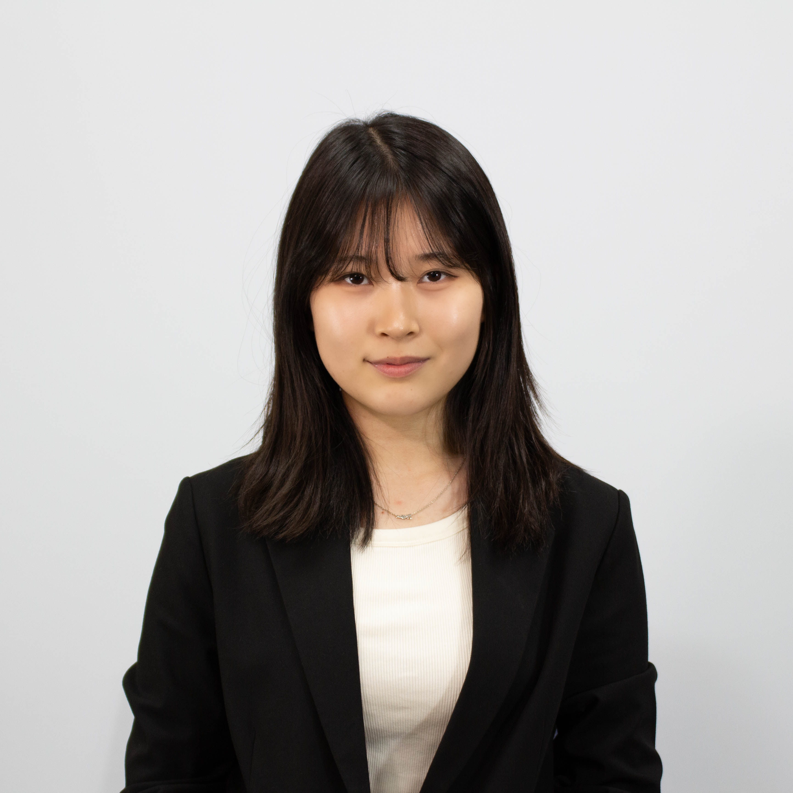

Chair Letter
Honorable chairs, esteemed delegates, distinguished directors, and respected staff,
It is my profound honor to welcome you to KISMUN 2025. My name is Kaeul Park, and I have the privilege of serving as the Heady Chair of UNESCO, alongside my deputy chair, Ubin Kou. We are genuinely delighted to guide you through this conference and look forward to witnessing your voices shape constructive and meaningful debates within our committee.
Reminiscing on the beginning of my MUN journey, my first step goes back to grade 9 in KISMUN 2023. Standing in the committee room, the fear of raising my placard felt overwhelming — I could hear my heartbeat racing, and my hands trembled with nerves. I was often consumed by doubt, questioning whether my words carried any substance or value. The weight of self-criticism and the fear of inadequacy left me disheartened, yet I gradually came to recognize that these very struggles were indispensable to my growth. They taught me that MUN is not a stage for immediate perfection, but a space where one learns to confront hesitation and discover inner strength.
This year’s theme, ‘TO WHERE COURAGE LEADS YOU,’ speaks directly to that lesson. For some of you, courage will mean raising your placard for the first time. For others, it may mean listening deeply to perspectives different from your own, or leading your bloc through moments of uncertainty. Nevertheless, no matter the form it takes, I hope you allow the courage to guide you into new ideas, into growth, and into confidence you may not have known you possessed.
Over the next three days, you will face challenges or perhaps even doubts. But remember, these very moments are what make MUN transformative. Let your courage lead you forward, and by the end of this conference, I believe each of you will leave not only with improved skills, but also with a renewed sense of who you are becoming.
I look forward to seeing passion as well as your determination lighting up our committee. Let’s make KISMUN 2025 a place where courage writes the next chapter of your journey.
Best regards,
Kaeul Park,
Head chair of United Nations Educational, Scientific, and Cultural Organization,
KISMUN 2025.